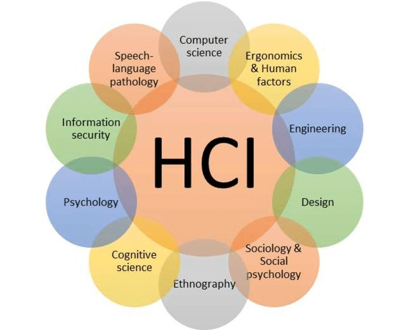
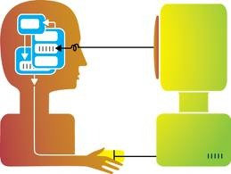
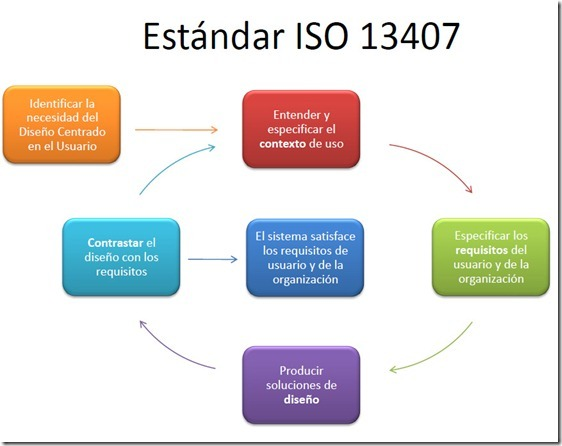

Este sitio tiene como propósito la profundización y análisis de los temas interface de usuario y interacción humano ordenador,
se pretende hacer claridad acerca de estos desglosándolos de la mejor manera para que sea de fácil comprensión.
La interfaz de usuario
Las consideraciones acerca de los factores humanos aplicados al campo de la ingeniería informática han
crecido, principalmente por varios motivos:
- Los sistemas basados en ordenadores se utilizan para un espectro cada vez más amplio de actividades
humanas.
- El creciente desarrollo de sistemas de dispositivos portátiles con potenciales de conectividad sin
cables (Wireless) y de reducido tamaño impone severas restricciones en el diseño:
- Las pantallas son pequeñas.
- Tienen pocos botones y controles.
- Se reduce a la mínima expresión la tolerancia a errores.
La interface de usuario es en la mayoría de los casos el componente más crítico del sistema. Usuarios y operadores generalmente no entienden sobre el mundo interno de los ordenadores,
que se compone bits, bytes, ficheros, circuitos, etc. Los usuarios solo son capaces de explotar las posibilidades que la tecnología ofrece si sus interfaces transmiten dichas posibilidades,
por ejemplo, texto, imágenes o los sonidos que aparecen en los dispositivos de salida de este sistema (pantalla, altavoces, etc.).
En pocas palabras, en el mundo real, para el usuario la interfaz es el “sistema”.
Se encuentran dos conceptos básicos que hay que tener en cuenta a la hora de diseñar cualquier interfaz:
- Visibilidad, para poder hacer una acción sobre un objeto debe ser visible.
- Comprensión intuitiva, el objeto debe evidenciar en qué parte tenemos que hacer la acción y como la tenemos que hacer.
Este principio, la compresión intuitiva, se conoce como affordance (Norman, 1990) y constituye un concepto básico de vital relevancia en el diseño de cualquier tipo de interfaz.
Interacción Humano Ordenador
La disciplina de interacción persona-ordenador (IPO) se conoce en la comunidad internacional como human-computer interaction (HCI).
La asociación de maquinaria de computación propone la definición siguiente de interacción persona-ordenador:

La asociación de maquinaria de computación propone la definición siguiente de interacción persona-ordenador:
“es la disciplina relacionada con el diseño, evaluación e implementación de sistemas informáticos interactivos para el uso de seres humanos,
y con el estudio de los fenómenos más importantes con los que está relacionada”.
La disciplina IPO esta interesada en todos los aspectos relacionados con el proceso interactivo que se produce entre una o mas
personas y uno o mas ordenadores o sistemas interactivos en general. Esto supone estudiar y conocer a las personas como parte
integrante de grupos u organizaciones, las condiciones bajo las cuales el sujeto puede querer utilizar un determinado
dispositivo(no es lo mismo consultar la agenda sentado frente al ordenador personal que hacerlo mientras se camina hacia una
reunión) y las características físicas que intervienen en esta interacción(la persona puede tener la visión o la movilidad
disminuida y necesita utilizar un software especializado de lectura de la pantalla o de reconocimiento de la voz
para manejar el sistema).

Dentro de las normas ISO, específicamente la ISO 13407, la cual describe como un proceso de diseño de sistemas fáciles de utilizar y de aprender.
